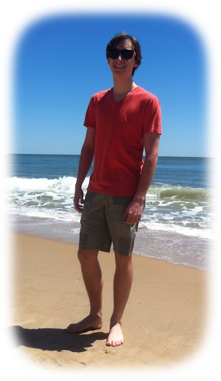

He's also a Computer Science major at at the Cornell University School of Engineering. Not only is Zachary interested in things like software development, machine learning, computer vision, and graphics — He's also a member of the Cornell Chai Notes, and loves to solve twisty puzzles like the rubik's cube. Lastly, Zachary loves to bodyboard and generally always want to be on the beach.
Interested? See his resume or check out his recent projects.